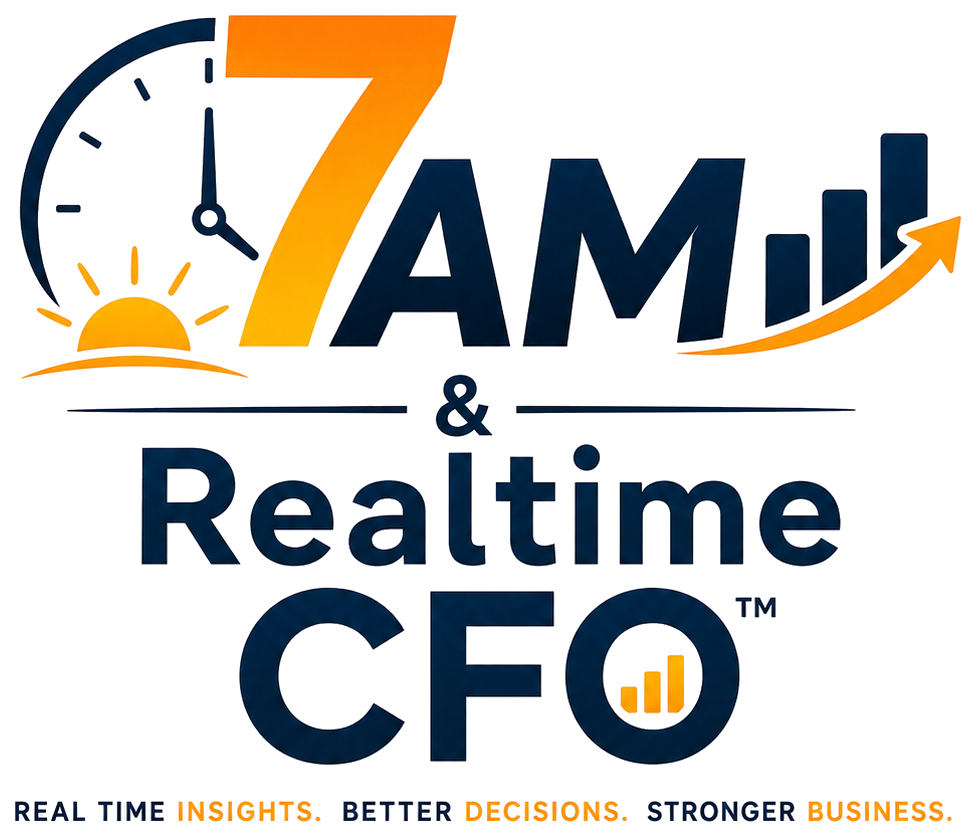

Not a tagline. The reason this Global Fractional CFO, finance systems and training practice was built, and exactly who it is built for. It starts with a blind spot somebody else missed, not with software.

I help businesses identify and solve Finance Blind Spots before they become expensive.— Suraj Kumar Lohani, Global Fractional CFO
This practice was not built in a lab. It was built by someone who has sat inside real ledgers, real chaos and real month-ends — and has personally felt what it costs a business when the numbers are technically available but nobody can see what they actually mean.
That is carried with a quiet personal discipline — a daily practice of humility, patience and consistency that shapes how this work gets done, not just what gets delivered. It rarely needs to be said out loud; it simply shows up as a refusal to cut corners with someone else's numbers.
Which is why the product follows one non-negotiable rule: Data First, Rakshak Second, AI Third, Human Responsible always. Every number is verified before it is ever summarized, because a wrong number delivered fast is still wrong. The mission is not more automation for its own sake — it is visibility a founder can actually stake a decision on, every single morning.
That mission is carried out as a strategic partner to CEOs, directors, owners and founders — not a vendor delivering a report and moving on, but someone who sits with the business long enough to see what the numbers are actually trying to say.
The same belief drives the teaching side of the work. As an author, trainer and educator, the aim is to teach students, professionals and finance teams the thinking behind the tool, so that more people can see a blind spot before it becomes expensive.
Where we work, what we build, and who it is built for — all one architecture, not three separate offerings.
One is Financial Diagnostic & Control Architecture. The other goes past the system record to ground-level reality.
I Make Financial Blind Spots Visible, Before They Become Expensive.
Cash. Margin. Working Capital. Control. Anytime. Anywhere.
Fractional CFO. FP&A. Forensic Finance. Automation. Training.
Cash Position. Cash Vs Profit. Variance Flag. Inventory Management. Working Capital. Today's Decisions.
A short diagnostic reveals where your biggest visibility gap is — cash, inventory, costing or controls. Free. Ten minutes. No obligation.
Start the Free Diagnostic →The mission is the same for both of us: turn a financial problem into a working, measurable and repeatable system. The scope is split by what each of us does best.
Global Fractional CFO leadership, FP&A, forensic finance and controls, periodic MIS and reporting, training and books. He finds the blind spot and sets what the numbers must show.
Power BI dashboards, SQL and Python reporting, Excel finance templates, AI workflows, automation and SOP design. She builds the system that keeps the fix from coming back.
Diagnose → Design → Build → Automate → Run. Where a problem starts with the numbers, Suraj leads. Where the solution needs data, dashboards, workflows or automation, Shikha leads. A person always reviews what matters.
Leave your details — we reply within one business day.
No spam. Prefer WhatsApp? DM "MORNING" to +91-7011283542.
Know a founder who needs this? Send them a Fin-vite — that's how most conversations here start.